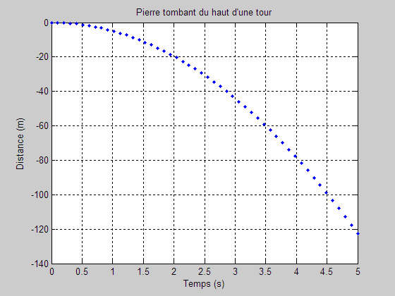

Pierre tombant du haut d'une tour
clear; home; close all % Définir les valeurs de temps. t = linspace(0,5,50); % 300 points g = 9.81; % m/s^2, accélération gravitationnelle s = -0.5*g*t.*t; % s pour chaque valeur de t. plot(t,s,'.b'); grid on; xlabel('Temps (s)'); ylabel('Distance (m)'); title('Pierre tombant du haut d''une tour');
